25+ years of UX leadership across hardware and software products, from startups to enterprise scale.
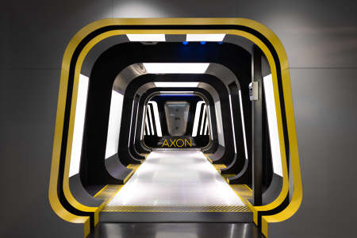
Axon's mission is to save lives and protect the truth in public safety around the world. At Axon I led the global Product Design, UX Research, Technical Writing...
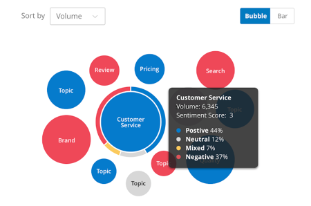
At Qualtrics I led the global UX Design & Research organization. I was responsible for creating great user and buyer experiences across all Qualtrics products....
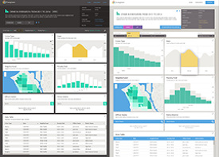
At Socrata I was the head of the UX Design and Research teams. My team was responsible for all product design across the Socrata suite of web applications as...
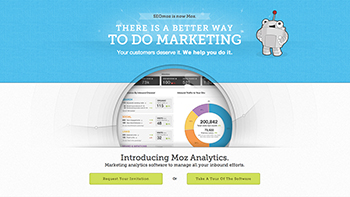
At Moz I was head of the creative department overseeing the work of 6 designers working on everything UX and Design related for the company including everything...
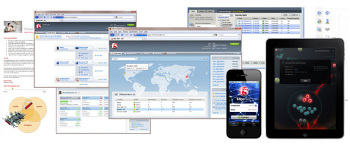
Web and mobile applications for network configuration and visualization. Manager of the first UX team at the company responsible for UX Design, UX Research and...
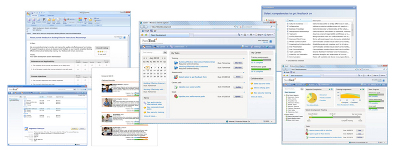
e-learning and performance management web applications. Started the first UX team at the company from scratch. Build the team and discipline, changed corporate...
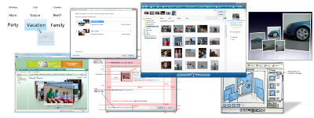
Design of Windows Live Photo Gallery and both desktop as well as online management and sharing experiences. Led the UX initiative across the general area. I set the...
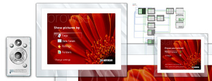
Wireless photo frame experience. Reference design for hardware manufacturing partners of Microsoft. Information Architecture Hardware
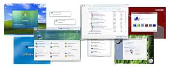
Windows out of the box experience, hardware experience, and home networking. Dramatically improved the Windows Out of the Box experience by reducing the average...
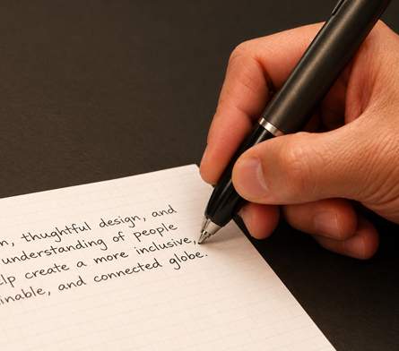
Hardware interaction design and software user interface design of digital pen that captures what you write.
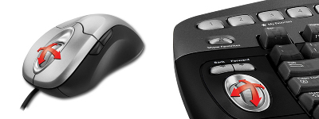
Tilt wheel for horizontal scrolling. Generated a patent with this idea. Tilt Wheel generated more profit for Microsoft than the invention of the original optical...
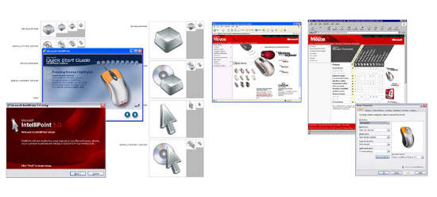
Interaction and graphic design of hardware drivers, corporate websites and branding. Led a large scale innovation project that provided product ideas for 3-5 years...
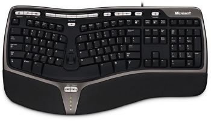
Hardware interaction design and industrial design of keyboards. Designed numerous keyboards during the 3 years at Microsoft Hardware. Destination...
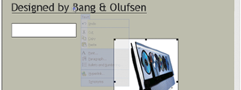
Thesis project at Microsoft in cooperation with the Microsoft Office and the Hardware group. Design and research of hardware software combination mechanism to make...
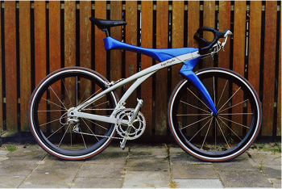
Industrial design of race bicycle. Included design of an interactive computer that helps you train and communicate with your team. Bicycle was featured at the...